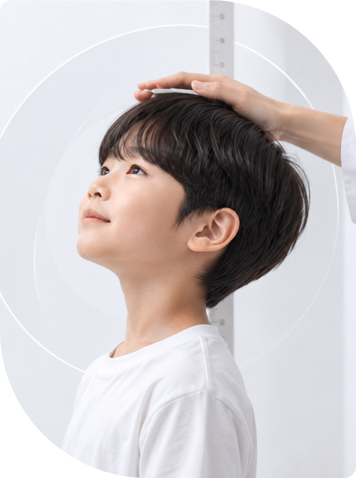

전신의 연결을 보는 구조적 접근
얼굴부터 척추와 골반, 하지까지
신체 전반의 연결을 이해하고
성장기 체형을 분석합니다.
성장기 아이의 구조와 생활습관을 함께 이해하고
체형 분석부터 관리, 부모 상담까지 실전 역량을 키웁니다.
어린이·청소년 성장관리는 단순히 키의 변화만을 살펴보는 과정이 아닙니다.
성장기에는 얼굴의 균형부터 호흡, 척추와 골반, 다리의 정렬까지 신체 전반이
빠르게 변화합니다.
머리부터 발끝까지 자세와 체형을 관찰하고, 두개안면 · 호흡 · 늑골 · 척추 · 골반 · 하지의
정렬과 생활습관을 연결하여 불균형의 시작점을 분석하는 방법을 배웁니다.
아이마다 다른 성장 과정과 신체 특성을 고려해 관리 방향을 설정하고,
상태평가 → 관리 → 생활습관 → 부모 상담
까지 하나의 과정으로 연결할 수 있도록 구성한 8주
어린이·청소년 성장관리 실전 전문 과정입니다.
기초부터 전문 테크닉까지, 현장에서 필요한 핵심 기술을 체계적으로 익힐 수 있도록 구성했습니다.
얼굴부터 척추와 골반, 하지까지
신체 전반의 연결을 이해하고
성장기 체형을 분석합니다.
아이마다 다른 성장 단계와 체형을 고려해
필요한 관리 방향을 설정하고
맞춤형 테크닉을 익힙니다.
아이의 체형과 생활습관을 함께 살펴
부모 상담과 관리 계획까지
현장에 적용할 수 있도록 교육합니다.
성장기 아이의 신체 변화를 이해하고
전문적인 관리 역량을 갖춰
차별화된 경쟁력을 높입니다.
이론과 실습, 상담까지 단계별로 구성된 8주 전문과정입니다.
혀의 위치 · 코호흡과 구강호흡 · 구강 습관 · 생활습관과 자세의 관계
혀의 위치 · 코호흡과 구강호흡 · 구강 습관 · 생활습관과 자세의 관계
혀의 위치 · 코호흡과 구강호흡 · 구강 습관 · 생활습관과 자세의 관계
혀의 위치 · 코호흡과 구강호흡 · 구강 습관 · 생활습관과 자세의 관계
혀의 위치 · 코호흡과 구강호흡 · 구강 습관 · 생활습관과 자세의 관계
혀의 위치 · 코호흡과 구강호흡 · 구강 습관 · 생활습관과 자세의 관계
혀의 위치 · 코호흡과 구강호흡 · 구강 습관 · 생활습관과 자세의 관계
혀의 위치 · 코호흡과 구강호흡 · 구강 습관 · 생활습관과 자세의 관계
